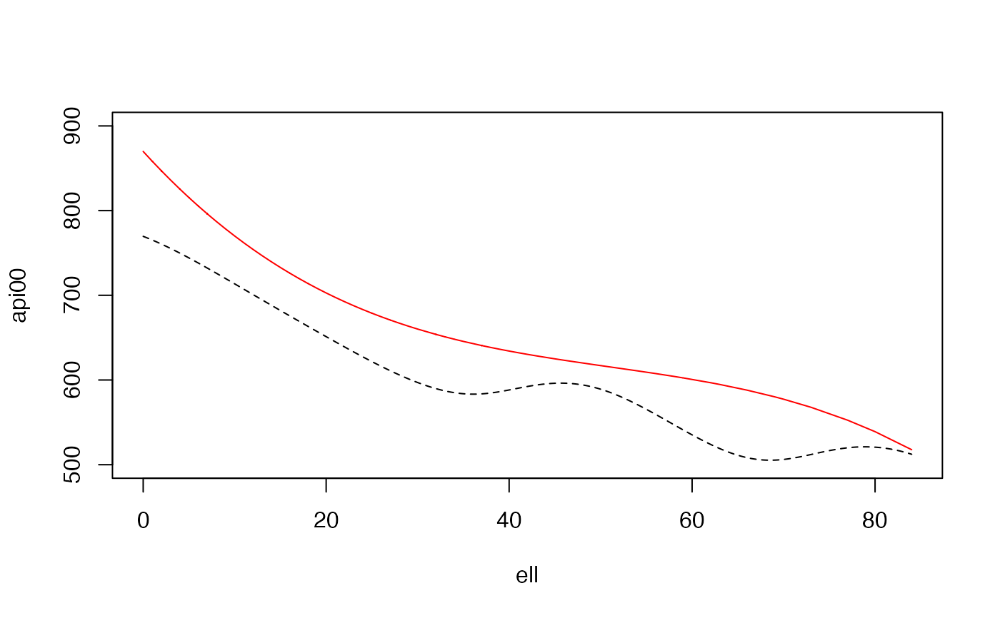
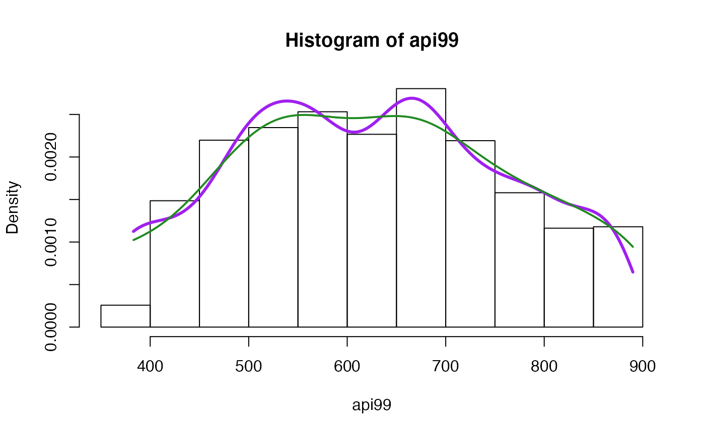
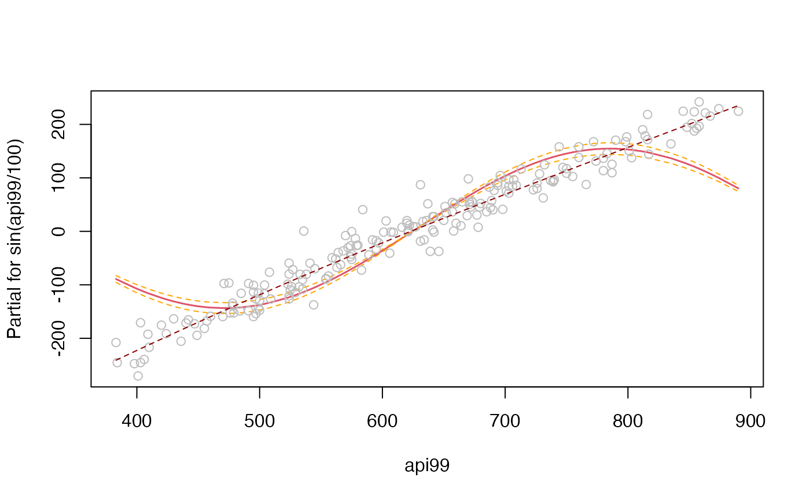
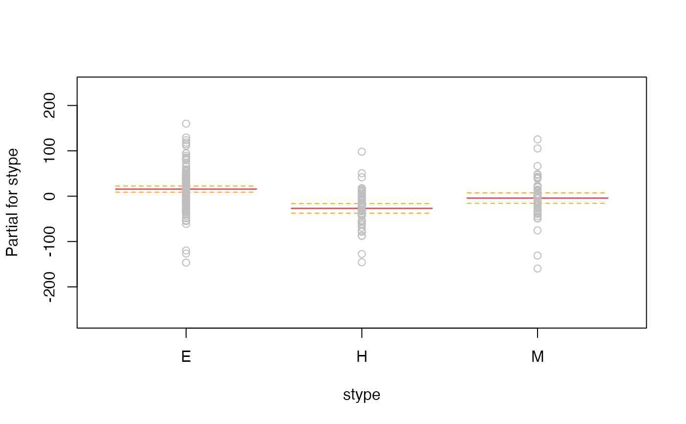

svysmooth.RdScatterplot smoothing and density estimation for probability-weighted data.
svysmooth(formula, design, ...)
# S3 method for default
svysmooth(formula, design, method = c("locpoly", "quantreg"),
bandwidth = NULL, quantile, df = 4, ...)
# S3 method for svysmooth
plot(x, which=NULL, type="l", xlabs=NULL, ylab=NULL,...)
# S3 method for svysmooth
lines(x,which=NULL,...)
make.panel.svysmooth(design,bandwidth=NULL)One-sided formula for density estimation, two-sided for smoothing
Survey design object
local polynomial smoothing for the mean or regression splines for quantiles
Smoothing bandwidth for "locpoly" or NULL for automatic choice
quantile to be estimated for "quantreg"
Degrees of freedom for "quantreg"
Which plots to show (default is all)
as for plot
Optional vector of x-axis labels
Optional y-axis label
More arguments
Object of class svysmooth
svysmooth does one-dimensional smoothing. If formula has
multiple predictor variables a separate one-dimensional smooth is
performed for each one.
For method="locpoly" the extra arguments are passed to
locpoly from the KernSmooth package, for
method="quantreg" they are passed to rq from the
quantreg package. The automatic choice of bandwidth for
method="locpoly" uses the default settings for dpik and
dpill in the KernSmooth package.
make.panel.svysmooth() makes a function that plots points and
draws a weighted smooth curve through them, a weighted replacement for
panel.smooth that can be passed to functions such as
termplot or plot.lm. The resulting function has a span argument that will set the bandwidth; if this is not specified the automatic choice will be used.
An object of class svysmooth, a list of lists, each with x and y components.
svyhist for histograms
data(api)
dstrat<-svydesign(id=~1,strata=~stype, weights=~pw, data=apistrat, fpc=~fpc)
smth<-svysmooth(api00~api99+ell,dstrat)
dens<-svysmooth(~api99, dstrat,bandwidth=30)
dens1<-svysmooth(~api99, dstrat)
qsmth<-svysmooth(api00~ell,dstrat, quantile=0.75, df=3,method="quantreg")
plot(smth)
plot(smth, which="ell",lty=2,ylim=c(500,900))
lines(qsmth, col="red")

svyhist(~api99,design=dstrat)
lines(dens,col="purple",lwd=3)
lines(dens1, col="forestgreen",lwd=2)

m<-svyglm(api00~sin(api99/100)+stype, design=dstrat)
termplot(m, data=model.frame(dstrat), partial.resid=TRUE, se=TRUE,
smooth=make.panel.svysmooth(dstrat))

